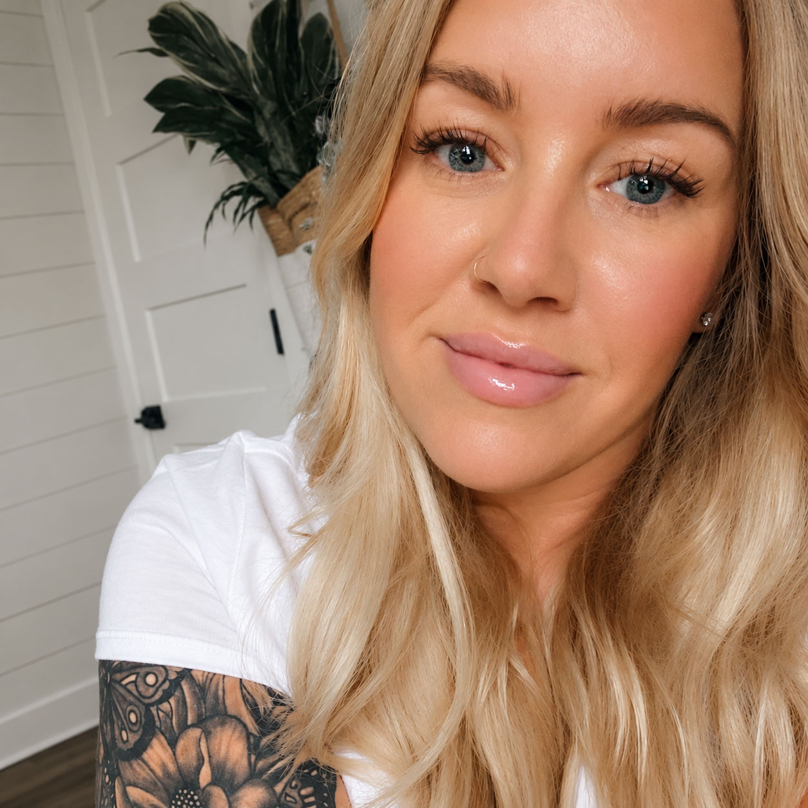

About
A multidisciplinary creative and digital experience leader with 11 years connecting creative thinking, technology, and business strategy.

I build teams. But the culture is what makes them great.
I started my career designing websites, writing code, and bringing creative ideas to life. Over the years, I built a digital creative team from the ground up and grew into leading a multidisciplinary UX organization.
But what I'm most proud of isn't a project, a launch, or a business result. It's the culture we've built together.
I start every 1:1 with "How's life?" instead of "How's work?" because I genuinely care about the people behind the job titles. We share pieces of our lives, celebrate each other, and show up when it matters. Those relationships build trust, trust creates space for ideas and collaboration, and that's how a group of talented individuals becomes a powerhouse of a team.
Their wins belong on my fridge.
I'm ridiculously proud of my people.
I want them to grow, discover what they're capable of, and have opportunities they never thought possible. I'll champion their ideas, fight for their recognition, and be their loudest advocate when they're not in the room.
I lead with empathy, honesty, and high expectations. I'm not afraid of difficult conversations, challenging decisions, or standing up for what's right for my team. I believe people do their best work when they feel supported, trusted, and empowered to take ownership.
My team deserves a seat at the table, not just a list of things to execute. I want them contributing their expertise, challenging perspectives, and helping shape the direction of what we're building.
I measure my success by the people I've helped grow, the confidence they've gained, and the things they've accomplished.
I want to build a team that does exceptional work, but I also want people to look back on their time working together and remember how it felt to be part of it.
Still a creative at heart.
I've been the designer, the developer, the art director, and the person responsible for bringing it all together. That hands-on experience shapes how I approach strategy, solve problems, and lead.
I understand the work because I've done the work.
And I know how much better it becomes when talented people are trusted, supported, and given the space to do what they do best.